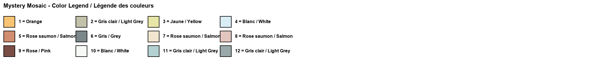
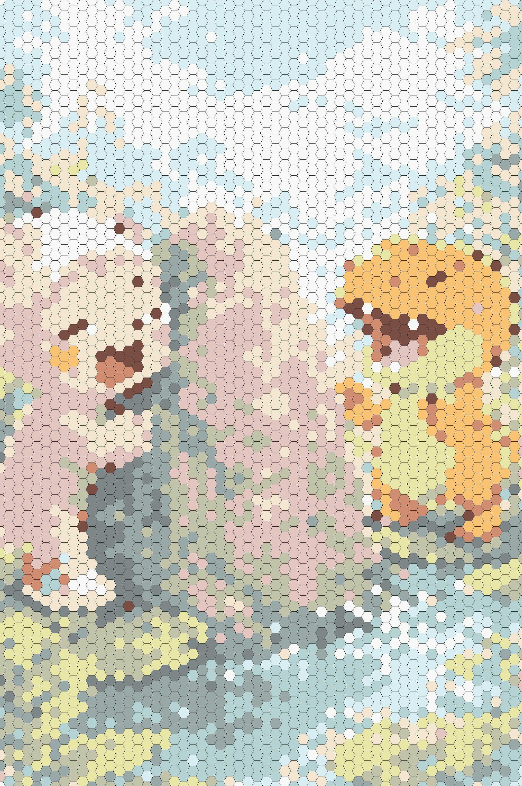

Original ImageImage originaleImagen original

Mystery Mosaic – Can you reveal the hidden image?Mosaïque mystère – Peux-tu révéler l'image cachée ?Mosaico misterioso – ¿Puedes revelar la imagen oculta?
Color LegendLégende des couleursLeyenda de colores

Answer Key (Spoiler!)Corrigé (Spoiler !)Clave de respuestas (¡Spoiler!)

Download More Mystery MosaicsCrée ta propre mosaïque mystère !ÂDescarga mas mosaicos misteriosos
Choose from Coco's prepared printable mosaic pages, already made and ready to download.Télécharge n'importe quelle image et transforme-la en mosaïque mystère imprimable. Essaie 3 gratuitement !Sube cualquier imagen y transfórmala en un mosaico misterioso imprimible. ¡Prueba 3 gratis!
🎨 Create on Univers Studio🎨 Créer sur Univers Studio🎨 Crear en Univers StudioAbout This Dinosaur Mystery Mosaic
Travel back in time with this free printable dinosaur mystery mosaic! This thrilling color by number activity features Coco the Axolotl on a prehistoric adventure, playing with an adorable baby T-Rex near an erupting volcano. The mosaic coloring page is made up of hexagonal tiles, each containing a number that maps to a specific color in the legend.
Dinosaur coloring pages have always been a favorite among children, and this printable color by number takes the experience to the next level. Instead of seeing the picture right away, kids must carefully color each numbered hexagon to gradually uncover the hidden dinosaur scene. It's like a puzzle and a coloring page rolled into one exciting kids activity!
Perfect for dinosaur-loving kids ages 3 to 8, this free printable can be used at home, in school, or at parties. Once they've finished this one, open the examples library for more prepared mystery mosaics.
À propos de cette mosaïque mystère dinosaure
Voyagez dans le temps avec cette mosaïque mystère dinosaure gratuite à imprimer ! Cette activité passionnante de coloriage par numéros met en scène Coco l'Axolotl dans une aventure préhistorique, jouant avec un adorable bébé T-Rex près d'un volcan en éruption. La page de coloriage mosaïque est composée de cases hexagonales, chacune contenant un numéro correspondant à une couleur spécifique de la légende.
Les pages de coloriage de dinosaures ont toujours été parmi les favorites des enfants, et ce coloriage par numéros à imprimer amène l'expérience au niveau supérieur. Au lieu de voir l'image immédiatement, les enfants doivent soigneusement colorier chaque hexagone numéroté pour découvrir progressivement la scène de dinosaure cachée. C'est comme un puzzle et une page de coloriage réunis en une seule activité passionnante !
Parfait pour les enfants amateurs de dinosaures de 3 à 8 ans, ce gratuit à imprimer peut être utilisé à la maison, à l'école ou lors de fêtes. Essayez notre générateur de mosaïques pour créer vos propres mosaïques mystères personnalisées !
Sobre este mosaico misterioso de dinosaurio
¡Viaja en el tiempo con este mosaico misterioso de dinosaurio gratuito para imprimir! Esta emocionante actividad de colorear por números presenta a Coco el Axolotl en una aventura prehistórica, jugando con un adorable bebé T-Rex cerca de un volcán en erupción. La página de mosaico para colorear está compuesta por casillas hexagonales, cada una conteniendo un número que corresponde a un color especÃfico de la leyenda.
Las páginas para colorear de dinosaurios siempre han sido favoritas entre los niños, y esta hoja de colorear por números para imprimir lleva la experiencia al siguiente nivel. En lugar de ver la imagen de inmediato, los niños deben colorear cuidadosamente cada hexágono numerado para descubrir gradualmente la escena de dinosaurio oculta. ¡Es como un rompecabezas y una página para colorear en una sola actividad emocionante!
Perfecto para niños amantes de los dinosaurios de 3 a 8 años, este imprimible gratuito se puede usar en casa, en la escuela o en fiestas. Abre la biblioteca de ejemplos para ver mas mosaicos preparados.
More Mystery MosaicsPlus de mosaïques mystèresMás mosaicos misteriosos